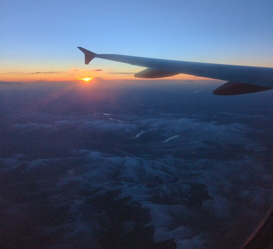
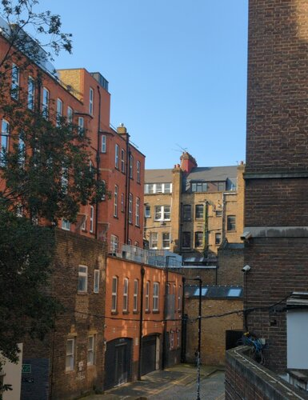
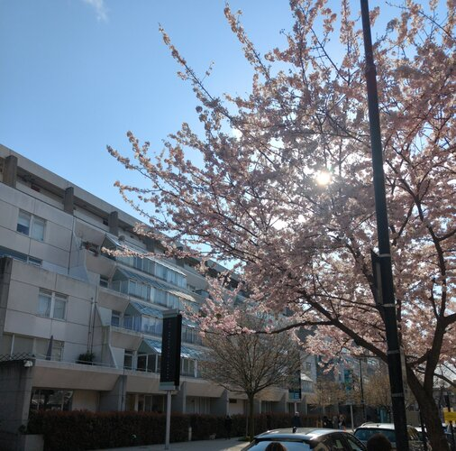
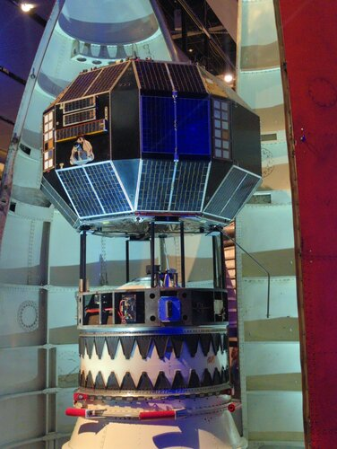
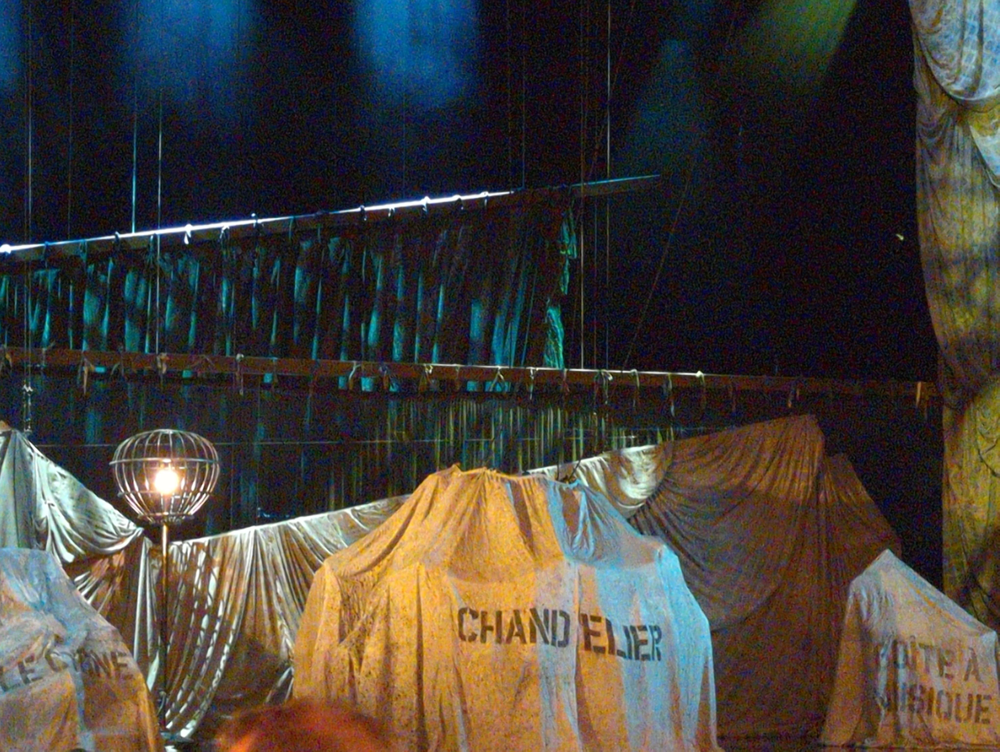
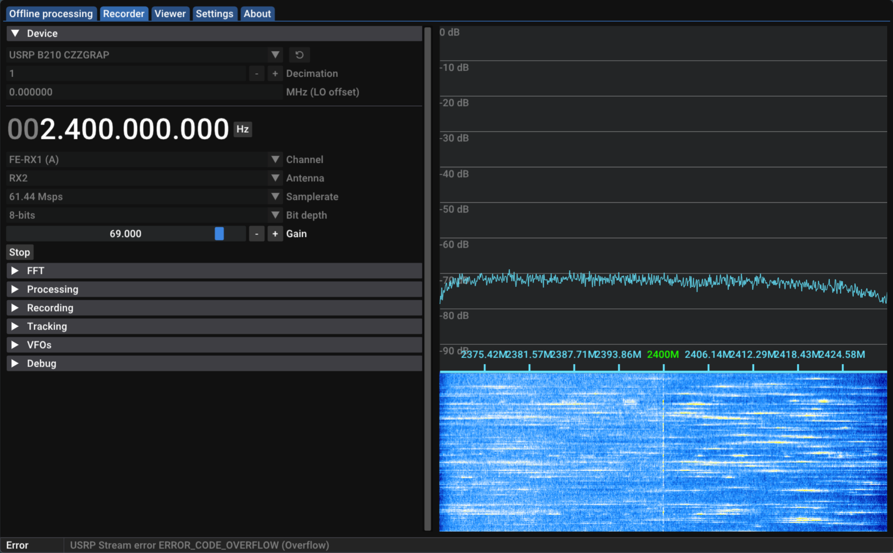
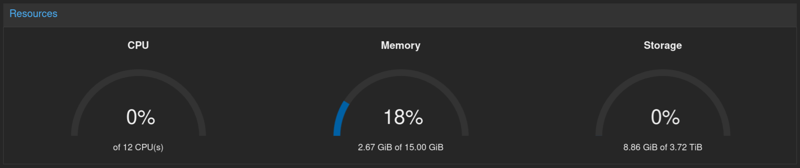
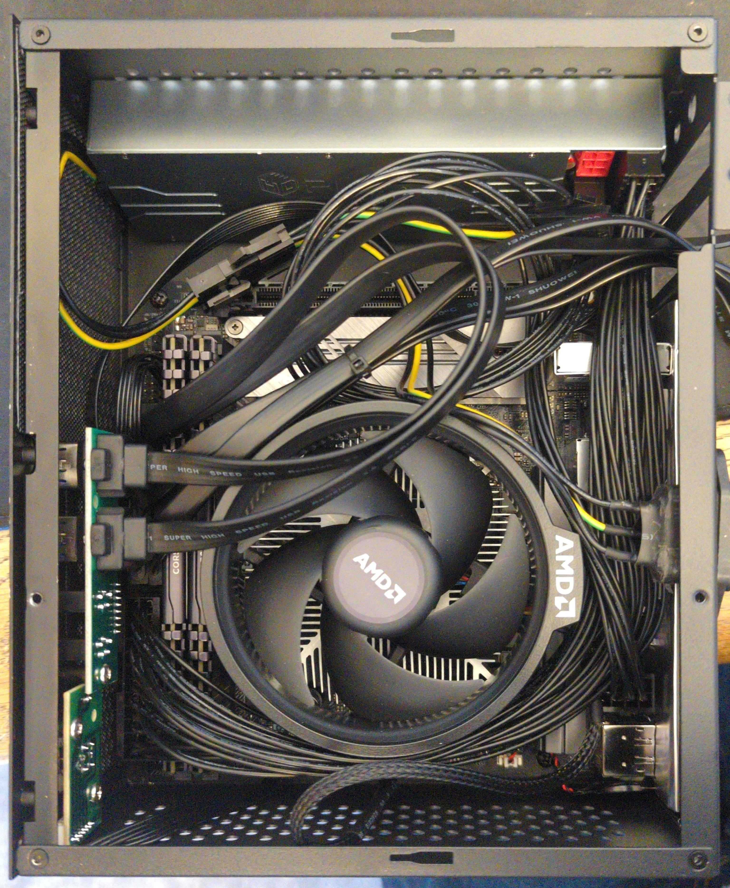
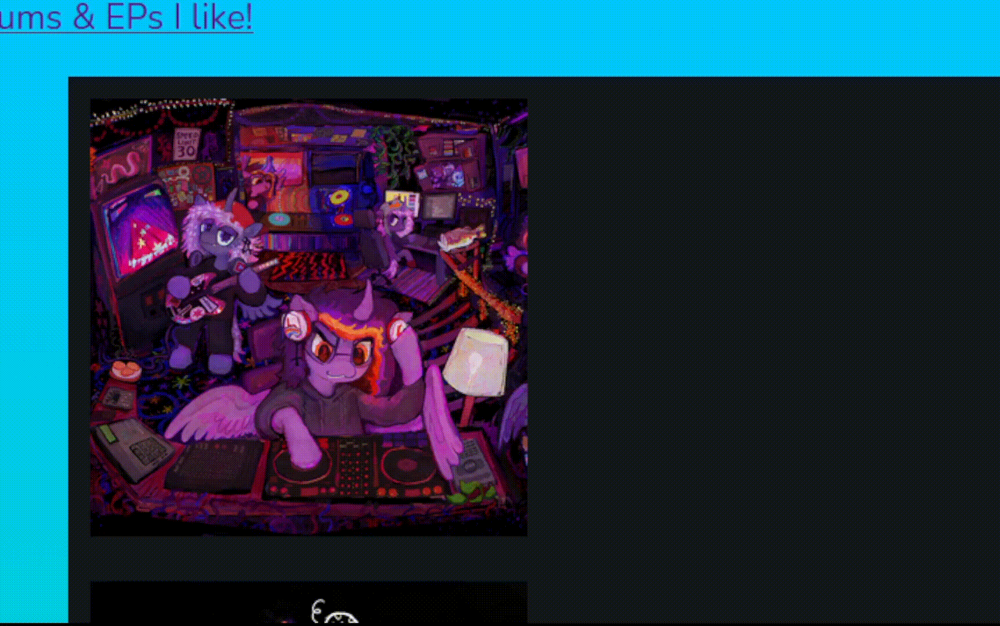
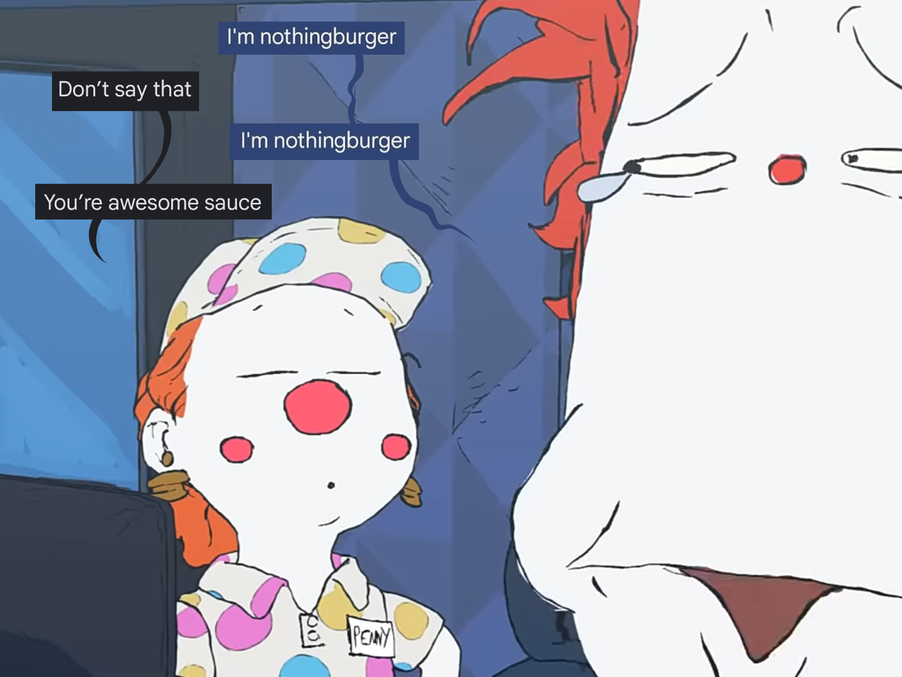

Cinema Two - C10
Fri 26 Mar 2026 6:00PM
Student - £6.00
VGA
Video Graphics Array
Project Hail Mary
12A
Fri 26 Mar 2026 6:00PM
Cinema Two - Seat: C10
Student - £6.00
28 March 2026
I just watch Project Hail Mary and ooohhhhh myyyyyyyy goddddddddd its so INCREDIBLE
I genuinely think this is my new fav sci fi movie (Interstellar formerly held this place in my heart, now it's close second). The cinematogrophy was gorgeous, the set of the hail mary was beautiful, and OUGGGHHH THE SPACE SHOTS. When Grace takes the samples of the Astrophage and everything turns this gorgeous pink <33333333333

go my low quality gif!
umm anyway 5 stars i love Ryan Gosling and Sandra Hüller <33
~~~~~~~~~~~~~~~~~~~~
I'd also like to show a little art project I've been putting together over the last month or two.
So someone has been putting up these little cat drawings around me for the past year, and I thought it would be fun to put them all together into a little timelapse of sorts.
Warning: Flashing Images
Hover to show
These are in rough chronological order of them being posted up. I think lining them up like this shows how the artist's style in drawing them has changed.
Thats all I had to share, bye!
Listening to: I hope this E-mail... - Jam2go
21 March 2026
I'm trying a new style of μblog, with more of a scrapbook vibe? Idk if I'll keep it. Also I just realised its been like a month since I last posted, oops :p
I went on a trip down to London on the weekend! For some reason we decided that we would leave early to skip staying an extra, to save money i guess. By the time we got there, I hadn't properly slept in like 24 hours and it was taking its toll lmaoo.
But being back in London was great! The weather was actually great considering this was around winter 2,, and I got to go see the Apollo 10 Crew Capsule and Black Arrow EXCEPT THEY WERE RE-DOING THE SPACE SECTION SO ONLY THE FAIRING WAS THERE it was still cool but cmon I wanted to see the whole thing :(




ANYWAY I also went to edinburgh on another very nice day! I found a bookshop with library-style ladders to reach the top shelves, that they actually encourage you to use :o
Class wise, I have a ton of reports due very soon and then exams right after and i'm dreading it. This is a little bit my fault, i've been neglecting them for a while, even as I type this at 2am (bedtime soon I swear).
This blog design will change eventually; I might to periodic changes but keep the old styles like im doing below this post, that could be fun. also I made a little cinema ticket I'll use when I go to the cinema (project hail mary next week (cant come soon enough (omg ryan gosling hiiii))). Ive not been to the cinema very much recently, ive been busy watching some shows (futurama, CITY, breaking bad etc)
Cinema Two - B7
Wed 4 Feb 2026 8:00PM
Adult - £7.00
VGA
Video Graphics Array
Rental Family
12A
Wed 4 Feb 2026 8:00PM
Cinema Two - Seat: B7
Adult - £7.00
thats all for this post, see you when i see you!
ps: im not proof reading these btw, if theres a spelling mistake idc lol
22 Dec 2025
I got a LibreSDR B210 mini, and i cannot for the life of me get this thing to work. Like I can understand not working on arch because who cares abt arch, but even trying on this rpi 4 it refuses to work. I'm making a small server pc so I'll put windows on that and see if I can't get it working that way; the docs have a section on windows so maybe that will work better :p.
uhh in other news just listened to the new Flavour Foley and LORD they just keep making peak again and again. Also this cute video is just aaaaaaa!!
Currently Listening to: Trust Device - Jonny Greenwood
23 Dec 2025
Merry christmas eve eve! It's not been very snowy this year, but i'm hoping things improve :)
also, I saw Phantom of the Opera today, incredible!!!

Listening to: Oh Noel - IDKHOW
27 Dec 2025
I FINALLY GOT IT WORKING!!

Now I can recieve up to ~60MSps!!! (literally never going to be used until I commit to X-band, but it was cheap so idc :) .
Listening to: 忘れてください - ヨルシカ
28 Dec 2025
oooooo baby shes pretty damn good!  a very low noise floor compared to the Hackrf I was using, and I could even pick images of Greenland (top of the image), which is a first for me! (I could probably get it to reach into north africa too, but my timing was poor and it was a lower elevation pass :p ).
a very low noise floor compared to the Hackrf I was using, and I could even pick images of Greenland (top of the image), which is a first for me! (I could probably get it to reach into north africa too, but my timing was poor and it was a lower elevation pass :p ).
The next move is to finalise the rotator firmware and finally build a lightweight dish for L-band, but that will have to wait until april-june. The future is promising!
Listening to: Human ft. SF-A2 Miki - Flavour Foley
30 Dec 2025
I've moved onto fixing the rotator for the L-Band Dish that I was working on over the summer. It's based on the Satnogs Rotator V3, but I've made changes to the mechanics because I dont have some of the parts on hand.
For some reason the code in the repo had issues with the easycomm v2 implementation, so I'm having to go in and troubleshoot it T_T
In other news the power supply for my new server pc is arriving today, so I can finish building it later!
1 Jan 2026
Happy New Year!!!
The power supply finally arrived for my server and after hacking out a hole in the case for the power cable, shes up and running!

She's running on a Ryzen 5 5600GT, and the cheapest DDR4 ram I could find rn :p. Right now It's just a NAS, but I'll probably put jellyfin or something on it, depending on connection speed.

here's her insides! its a rats nest! I dont care!
Listening to: The Whole World and You - Tally Hall
4 Jan 2026
Big changes to the /music tab of this site!

Also some stuff's been added to /computers, but there's not really any finished style soooo dont look I guess?
18 Jan 2026
I may have gone back to see The Phantom of the Opera again a few weeks ago, with great seats this time!!! It was an incredible performance, I literally can't stop thinking about it lollll
anyway Uni is starting again in a few weeks, so this will update less freqently. or more freqently, who knows?

08 Feb 2026
mm this site has been updated a lot since the last post, but no μblog posts. Maybe we got it both ways?
I MISS SPRING AND SUMMER!!!!! I genuinely haven't seen the sun or a blue sky in TWO WEEKS I CANT TAKE IT ANYMORE
I know I wont be saying this the moment it goes over 25 degrees but I think constantly striving for something is a good way to live your life, even if its just for a sunny day :,(